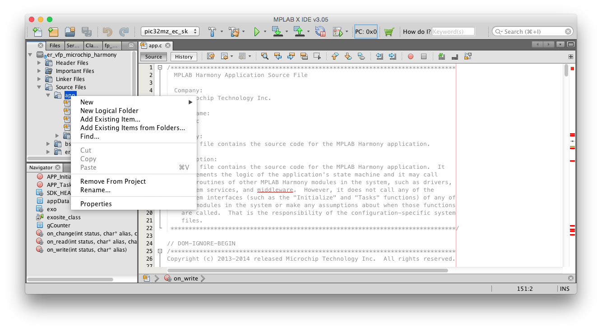
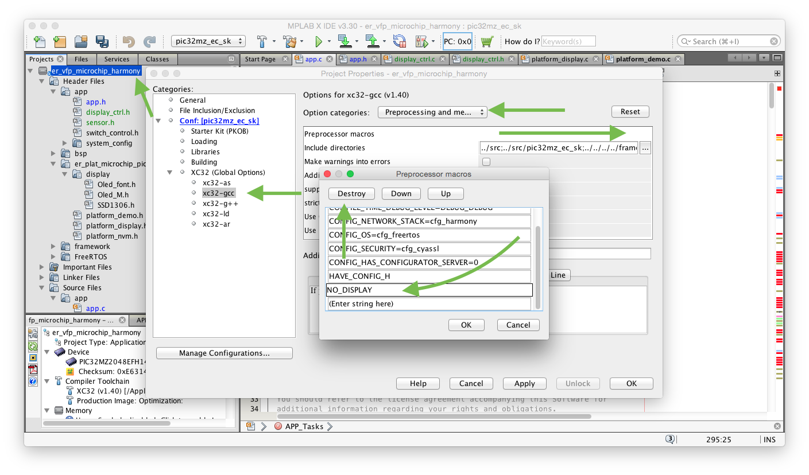

Lab 3 - Adding a Real Sensor
Now that you've gotten familiar with where some of the pieces of applications built on the ExositeReady SDK are found, we're going to go through adding some new hardware to show you how to integrate other sensors or devices into an ExositeReady SDK application.
Requirements
- PIC32MZ Embedded Connectivity Starter Kit
- Weather Click Board
- OLED Click Board
- Adapter Board
- An Internet Connection
- A Computer with MPLAB IDE, including:
- MPLABX IDE v 3.30
- Harmony v1.08
- XC32 v1.40b
- The ExositeReady SDK, plus
- The PIC32MZECSK port & example application
The software requirements for this lab are the same as the first lab. If you have not completed that lab yet, it's highly recommend you do so before starting this lab.
The Plan
You've been provided with a couple of mikrobus click boards, one containing a 'weather' (temperature, pressure, and humidity) and one containing an OLED display. In this lab we're going to add support for reading the temperature sensor and reporting the values from it in real time out to the Exosite platform for display in your web browser.
To change this we'll need to remove all the code that handles the LEDs and buttons and replace it with code that handles talking I2C to the BME280 temperature/pressure/humidity sensor and SPI to the controller for the OLED display.
Note: If you get stuck at any point during this tutorial, you can run
git diff origin/click_shield_demo {filename}to compare your current file to what we're going for. For example, to compare your app.c file to my final app.c, rungit diff origin/click_shield_demo firmware/src/app.cfrom theer_vfp_microchip_harmonyfolder. If you can't or don't want to use git, the output of the full project diff is available here.
Let's Go
The biggest, and easiest, changes will be the removal of the file containing the bulk of the code controlling the switches and the addition of the files containing the bulk of the code controlling the weather sensor and display, let's start with that.
The changes we're going to make first are fairly straightforward, but as configuring as exactly how to use these sensors and configure RTOS is outside the scope of the class we'll just copy the files for the sake of time. Feel free to compare files for changes or read the diff linked above.
If you haven't yet, download the lab3_files.zip file, then extract the files and copy the .c and .h files (one each for "display_ctrl" and "sensor") to the er_vfp_microchip_harmony/firemware/src directory.
You'll also want to copy over the system config folder from the zip file. This also goes into the er_vfp_microchip_harmony/firemware/src directory, these files change what tasks our RTOS is running. Just delete the existing directory and copy over the new one.
Next, in MPLAB, remove "switch_control.c" from the project (right-click menu on the file itself in MPLAB). Then add both "sensor.c" and "display_ctrl.c" to the project, I like to put them in the "app" group, do this by right-clicking on "app" under "Source Files" and choosing "Add Existing Item".

Next we want to add a few files that already exist, but that MPLAB doesn't know about. Right-click on the 'Source Files' group and select 'Add Existing Items from Folders...', then select to the folder 'er_vfp_microchip_harmony/er_plat_microchip_pic32mzecsk' (you may need to go up a few directories first). This should add a 'display' directory and a 'platform_display.c' file to the 'er_plat_microchip_pic32mzecsk' group.
We also need to enable some code in the platform files that is currently omitted by an #ifndef. The project properties have a preprocessor macro defined called 'NO_DISPLAY' that needs to be removed. To do so, open the project properties go to the 'xc32-gcc' item in the list, then choose 'Preprocessing and messages', next open the list of 'Preprocessor macros', and at the very bottom of the list select 'NO_DISPLAY' and click destroy. Exit the menus by clicking 'OK' on each.

With all that out of the way, we can now get to the interesting part, we'll start modifying the app.c source itself.
Near the top of the file, on line 112, we'll no longer need the global counter variable, you can remove it:
int gCounter
While we're up here, lets add some externs for a couple of functions the application will be using that are defined in the files we just copied:
extern int getTemperature(void);
extern int getHumidity(void);
Next, find the 'on_read' function, remove all the existing code from inside it and refill it with the following code:
if (status == ERR_SUCCESS) {
printf("Value read from server \"%s\" to %s\n", alias, value);
if(!strcmp("display", alias)) {
display_print_remote_msg(value);
appData.remote_msg_initialized = INITIALIZED;
}
} else {
/* In case of error, the reading will be repeated */
appData.remote_msg_initialized = NOT_INITIALIZED;
}
Do the same thing in 'on_change':
if (status == ERR_SUCCESS) {
printf("Value changed on server \"%s\" to %s\n", alias, value);
if (!strcmp("display", alias)) {
appData.remote_msg_initialized = INITIALIZED;
int val = atoi(value);
display_print_remote_msg(value);
}
}
The 'on_write' function will stay the same since it's only got a debug output message in it.
Next, we'll move to the 'APP_Initialize' function where you'll replace
appData.leds_initialized = NOT_INITIALIZED;
appData.counter_initialized = NOT_INITIALIZED;
with
appData.remote_msg_initialized = NOT_INITIALIZED;
Now, getting to "APP_Tasks", where the largest number of changes need to be made, near the beginning of the function, change the countDiff variable to sensorVal (it should stay an int).
Next, we want to create a new state that waits for the display to finish initializing itself. I've chosen to put this between the states "APP_TCPIP_WAIT_FOR_IP" and "APP_ER_SDK_INIT". Here is the new state as I've created it:
case APP_DISPLAY_INIT:
if(!is_display_ready())
break;
SYS_CONSOLE_MESSAGE(" Display initialized\r\n");
if (display_print_sn()!= ERR_SUCCESS) {
appData.state = APP_PLATFORM_ERROR;
break;
}
appData.state = APP_ER_SDK_INIT;
break;
You'll then also need to make sure to change the previous state's setting of the next state, if you put your state in the same location as I did that means changing appData.state = APP_ER_SDK_INIT; to:
appData.state = APP_DISPLAY_INIT;
In the "APP_CREATE_SUBSCRIPTIONS" state we'll want to change the name of the dataport that we're subscribed to. Simply change the string "leds" to "display" in both the subscribe and read functions.
In the same piece of code, change appData.leds_initialized = IN_PROGRESS; to: appData.remote_msg_initialized = IN_PROGRESS;
You'll want it to look like:
if(exosite_subscribe(exo, "display", 0, on_change) == ERR_SUCCESS) {
appData.remote_msg_initialized = IN_PROGRESS;
exosite_read(exo, "display", on_read);
appData.state = APP_APPLICATION;
}
In the next state, "APP_APPLICATION", we'll do exactly the same things for the first read call. That should now look like:
if (appData.remote_msg_initialized == NOT_INITIALIZED) {
appData.remote_msg_initialized = IN_PROGRESS;
exosite_read(exo, "display", on_read);
}
The following couple blocks of code, the code that reads from and writes to the "count" dataport should simply be deleted.
We'll replace it with code to write to the "temperature" dataport:
sensorVal = getTemperature();
sprintf(str, "%d.%01dC", (sensorVal/100),(sensorVal%100)/10);
SYS_CONSOLE_PRINT("Temperature: %s\r\n", str);
exosite_write(exo, "temperature", str, on_write);
Finally, you'll want to change the time value in the exosite_delay_and_poll call to something like 2000, any value over 1000 will work, this number if the number of milliseconds to wait between write calls to the platform.
exosite_delay_and_poll(exo, 2000);
That's finally everything for app.c.
We did change the names of some of the items that are defined in app.h. So open "Header Files" -> "app" -> "app.h".
First we need to add a "APP_DISPLAY_INIT" state to the "APP_STATES" enum. Second, we need to update the "APP_DATA" struct. Currently the anonymous enum defines two fields of the struct, "leds_initialized" and "counter_initialized". Remove both of those and replace it with a single field named "remote_msg_initialized". You should now have:
enum { NOT_INITIALIZED = 0, IN_PROGRESS, INITIALIZED } remote_msg_initialized;
We've now re-configured everything to use our new sensor, reading the temperature, and our new display, to display messages read from the platform. There is, however, one last change I've saved for last. Our device is still identifying itself as the same type of device we used in the first two labs, but we're now expecting an entirely different set dataports for reading from and writing to. I've created a second product for our new weather sensor device to use, it has a product ID of "4yfpd06gr1thuxr", you need to change this in app.c. Near the beginning of "APP_Tasks" there's two variables vendor and model, set both of these to "4yfpd06gr1thuxr". You should now have:
char *vendor = "4yfpd06gr1thuxr";
char *model = "4yfpd06gr1thuxr";
Now, that's all! Make sure you've saved all the files.
Since we changed some files outside MPLAB I'd suggest doing a clean build just to make sure all our changes are compiled in. Then program the new firmware to the device

Attach the Hardware
If you don't already have the Click boards attached to the main starter kit board, you should do that now. Slot the two Click boards onto the adapter board, then attach the adapter board to the 40-pin header on the starter kit as shown.
Using your New Creation
I've created another web UI that is associated with this new product ID, you can now see your new creation through https://er-simple-demo.apps.exosite.io.
Bonus Points
Humidity
The libraries you included earlier in the lab also provide a getHumidity()function, see if you can figure out how to use this to also write humidity values to the "humidity" dataport that is also already part of the client model you're using. Use the code that writes the temperature as a template.
Data Use Efficiency
Make the device use data more efficiently, you should implement an algorithm to only update the value written to the platform if there is a not-insignificant change in the value of the temperature.
Note: in the real world you should make your algorithm report at some minimal interval just to make sure you have a way to determine if any of your devices have died or lost their connection. It's up to you if you'd like to do that here.